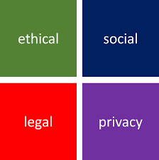
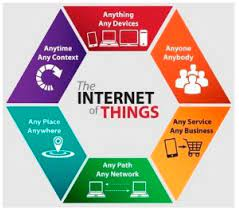

Legal, ethical, and social implications os using internet and devices.
Artificial Intelligence
Artificial intelligence (AI) is a field of computer science that focuses on creating systems that can perform tasks that typically require human intelligence, such as learning, reasoning, and perception. One of the bad use of internet is to use it to get the answer of the exams and doing plagiarism.
Ethical, Social, Legal, Privacy

According to the digital ethics of privacy, you are ethically required to adhere to an individual's wishes about how to use their data. However, that assumption can bring about the following ethical challenges related to data privacy: You might not know the individual's wishes.
Good use of internet

It supports human communication via social media, electronic mail (e-mail), “chat rooms,” newsgroups, and audio and video transmission and allows people to work collaboratively at many different locations. It supports access to digital information by many applications, including the World Wide Web.